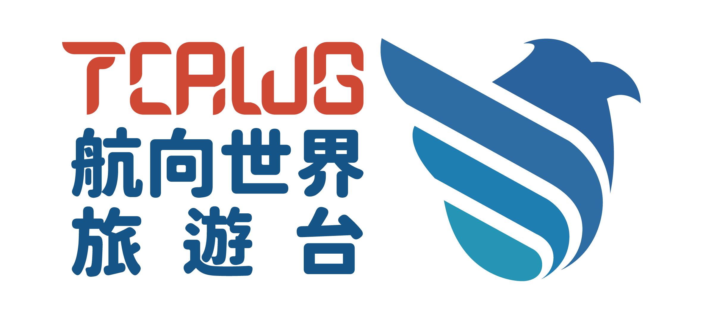

航向世界旅遊頻道
🏠
首頁
📺
所有節目
📅
節目表
🔐
會員登入
首頁
所有節目
節目表
會員登入
📺 所有節目
已歸檔的節目，支援多維度篩選和分類瀏覽
📊 節目統計
載入統計中...
🔍 篩選節目
國家/地區
全部國家
日本
韓國
泰國
越南
新加坡
馬來西亞
印尼
法國
義大利
德國
英國
西班牙
美國
加拿大
澳洲
紐西蘭
其他
節目分類
全部分類
亞洲旅遊
歐洲旅遊
美洲旅遊
美食旅遊
極地旅遊
自然旅遊
文化旅遊
冒險旅遊
其他
子分類
全部子分類
美食
文化
自然
藝術
海洋
溫泉
節慶
購物
冒險
其他
播出週別
全部週別
最低評分
全部評分
1星以上
2星以上
3星以上
4星以上
5星
節目狀態
全部狀態
已歸檔
熱門
推薦
套用篩選
清除篩選
排序方式：
播出日期（最新）
播出日期（最舊）
評分（最高）
評分（最低）
觀看次數（最多）
觀看次數（最少）
收藏數（最多）
收藏數（最少）
載入節目中...